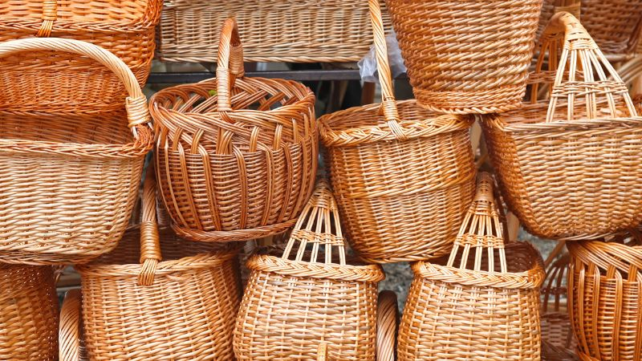

Cara Membuat Keranjang dari Rotan

Bahan Yang Diperlukan
Rotan yang dapat Anda beli di toko kerajinan. Pastikan rotan yang dibeli telah dianyam, bukan masih mentah
sehingga harus diolah dulu.
Lem Crossbond yang sudah mudah ditemukan.
Alas keranjang dari kertas karton atau kayu triplek bersih.
Amplas untuk menghaluskan.
Kain untuk alas keranjang.
Hiasan tambahan sesuai keinginan Anda, seperti pita atau renda.
Alat tulis dan pemotong.
Cat warna atau finishing dengan pernis kayu sesuai keinginan Anda.
Rangka untuk membuat keranjang, seperti kardus kotak atau wadah silinder.
Cara Membuat
- Sekarang waktunya Anda menentukan desain keranjang. Saat ini cukup banyak desain keranjang yang dapat
Anda pilih. Seperti berbentuk simetris alias kotak atau bentuk lonjong. Selain itu bisa juga diberikan
pegangan di sisi kiri dan kanannya. Semua desain ini tergantung dari kebutuhan dan keinginan Anda juga.
- Jika memang ini merupakan pengalaman pertama Anda, sebaiknya pilih desain kotak terlebih dulu karena
prosesnya lebih mudah kalau dibandingkan dengan bentuk lainnya.
- Anda bisa memulai proses pembuatan dengan mengambil alas keranjang. Bersihkan dulu dengan amplas jika
memang diperlukan. Kemudian lanjut ke rotan anyam yang telah dibeli. Rotan ini bisa mulai Anda anyam
mulai dari tengah agar bentuknya luas dan sama dengan alas keranjang.
- Selanjutnya, ambil lem Crossbond untuk mengelem alas rotan dengan hasil anyaman yang telah dibuat. Sisa
rotan yang belum teranyam dapat mulai dikerjakan mengikuti rangka kota yang dipersiapkan.
- Proses pengayaman yang tersisa bisa dilakukan dengan posisi horizontal dan saling silang. Untuk tiap
ujungnya, kembali dimasukkan ke dalam anyaman lalu gunakan lem agar bisa menyatu sempurna. Terus lakukan
langkah ini hingga semua bagian rangka tertutup anyaman. Sekarang Anda sudah memiliki keranjang yang
dapat dihias agar lebih menarik menggunakan renda, pita, atau bunga plastik.